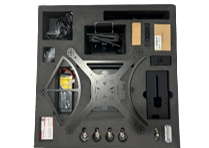

AeroBOT-A2 智能无人机装调套件
无人机基础装调实验室专用实训设备，分基础版/高阶版双配置，覆盖拆装实训、飞控调试、ROS自主导航与AI视觉避障全流程教学科研需求。

产品概述
AeroBOT-A2 属于无人机基础装调实验室系列核心产品，分为基础遥控飞行版、高阶ROS自主避障版两套硬件方案，专为高校航空、自动化、人工智能专业打造。产品采用全碳纤维+航空铝机身结构，支持学生反复拆装练习、故障维修、飞控参数调试，高阶版本搭载AI异构计算平台，可开展室内SLAM建图、自主导航、视觉识别等前沿课题研究。配套完整教学资料，兼顾课堂基础实训与高水平学科竞赛、科研论文开发。
版本功能介绍
基础版（遥控及地面站飞行）
整机采用全碳纤维上下板+航空铝四旋翼结构，使用M3内六角碳钢螺丝，耐反复拆装不易损坏；搭载STM32开源飞控，代码全C语言开源；可搭配室内网房安全试飞，支持自稳姿态、定高两种飞行模式，适合零基础学生完成零部件组装、故障检测、基础飞参调试教学。
高阶版（基于ROS的自主飞行避障）
在基础版硬件上升级英伟达AI控制器+STM32飞控分布式异构系统，上位机40TOPS AI算力，原生支持ROS系统与深度学习算法；集成40m量程激光雷达、深度相机、1080P视觉传感器，实现无GPS环境下室内SLAM建图、自主路径规划、动态避障；开放底层硬件接口，支持WiFi/USB双通讯，适配集群协同、机器视觉等前沿科研项目。
产品特点
多传感器融合配置，激光雷达+深度视觉多源感知。
消费级高端硬件，搭载Nvidia核心AI控制器。
SLAM地图构建+人工智能算法一体化应用。
搭载pixhawk开源飞控底层，二次开发门槛低。
整机软件全开源，厂商提供终身免费升级服务。
基本配置参数
应用价值
AeroBOT-A2 打通无人机从基础组装到AI自主飞行的完整教学链路，基础版满足课内拆装、飞控调试实训；高阶版支撑师生开展自主导航、机器视觉、集群无人机等创新课题，配套完整教学文档，大幅降低高校无人机实验室课程建设与科研项目开发成本，助力学生参与电子设计、航空航天类学科竞赛。
适用场景
高校无人机基础装调实验室、航空航天专业实训课堂、自动化AI视觉科研实验室、ROS自主导航课题研发、大学生电子创新竞赛、无人机故障维修实训教学。